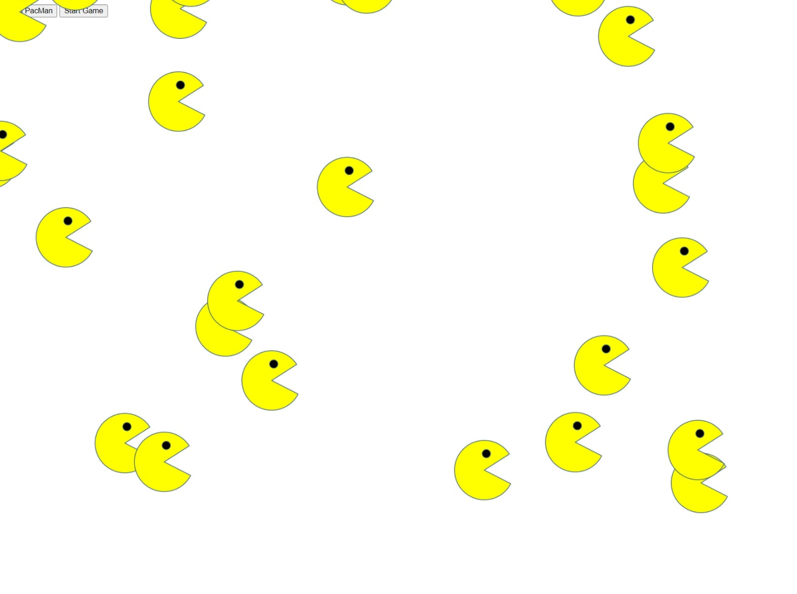
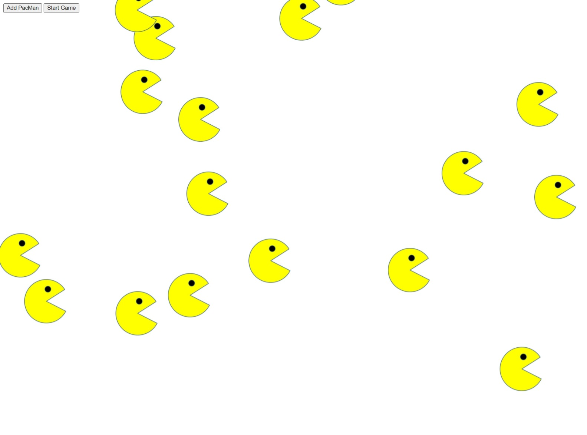
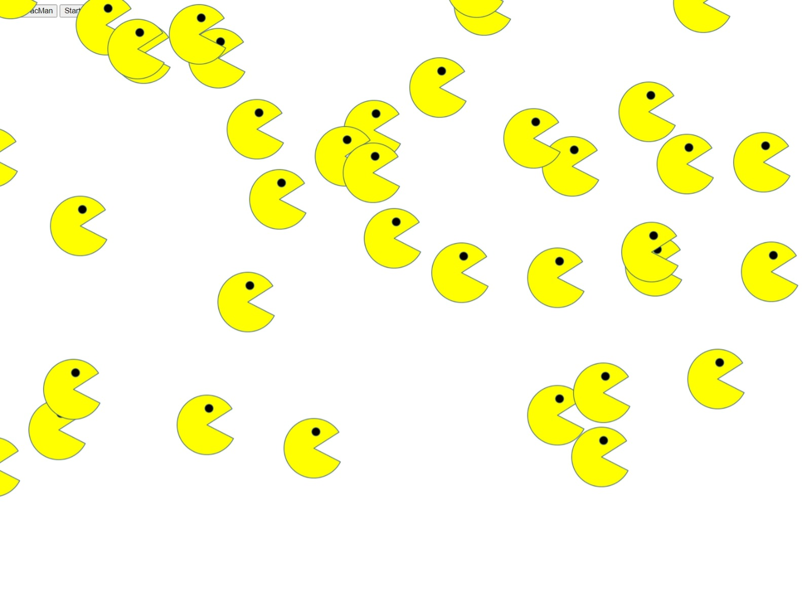
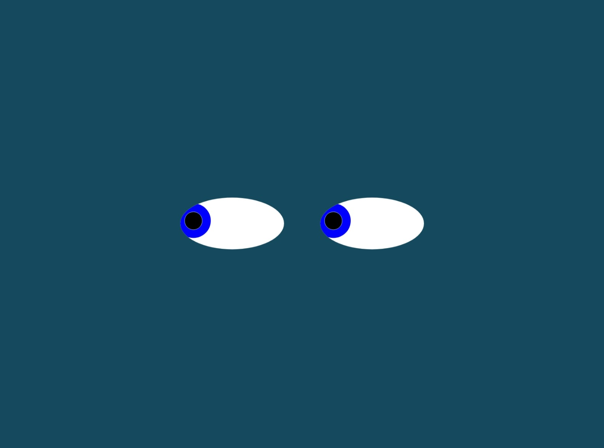
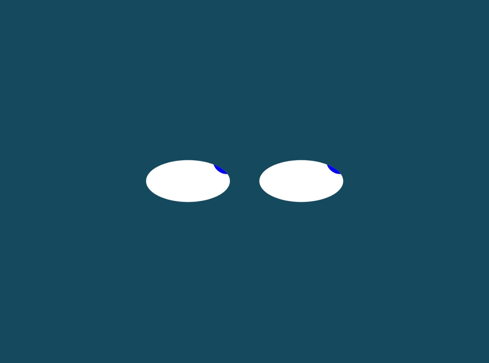
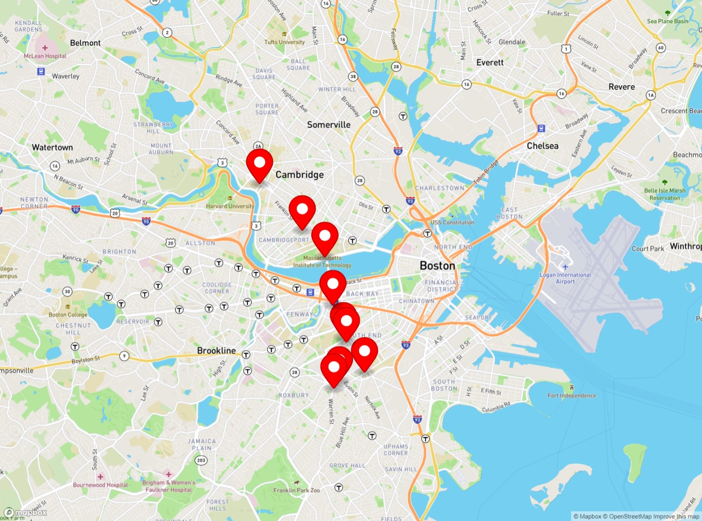
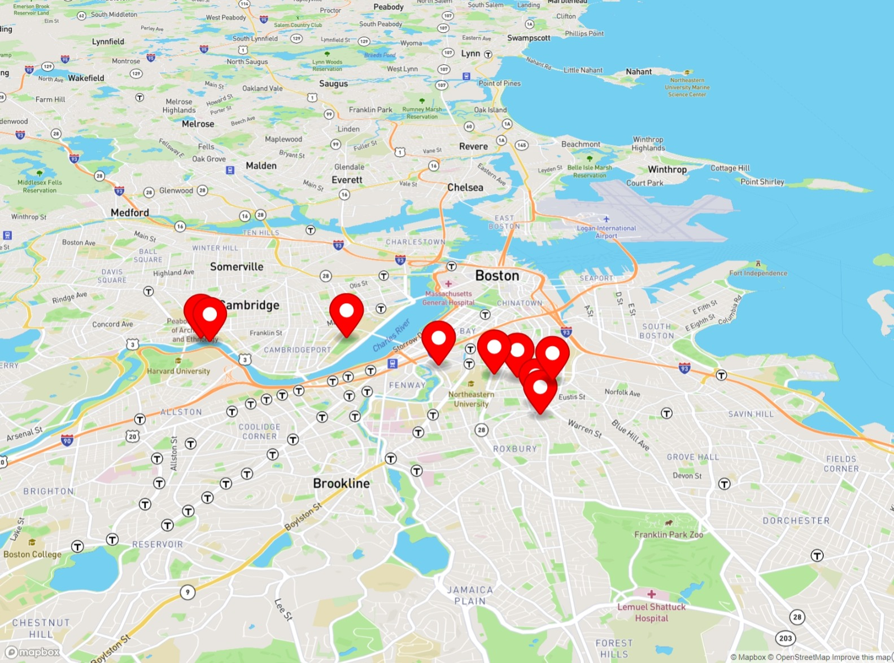
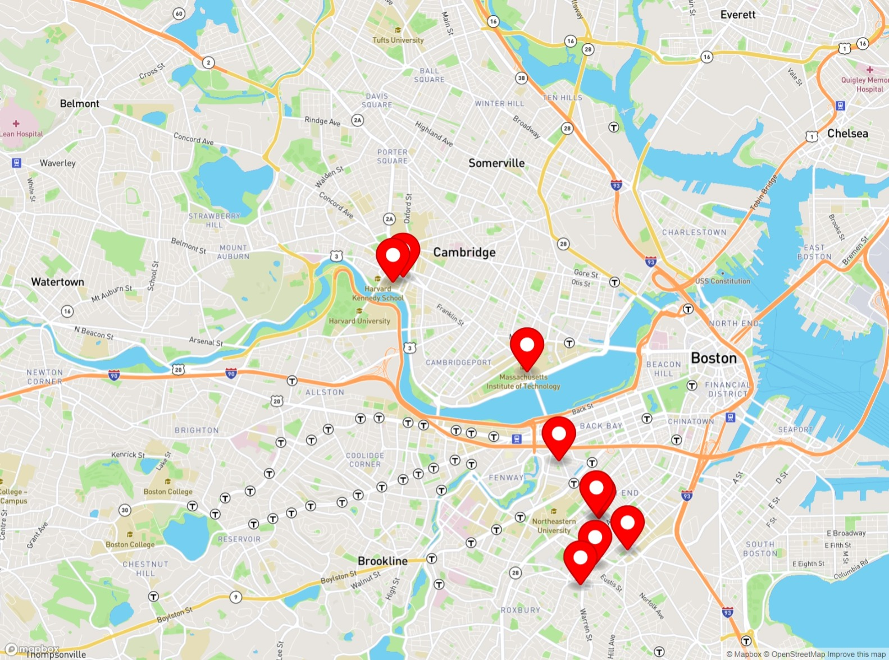

Votsis Panagiotis
portfolio
This exercise is a Factory for making PacMen. When button "Add PacMan" is pressed a new PacMan is added to the "game". When button "Start Game is pressed the PacMen are starting to move around the screen with different speed and bouncing off the walls
PhotoGallery:



In this exercise, I designed two eyes which are following the movement of the mouse.
PhotoGallery:



REAL-TIME BUS TRACKER
This is a Real Time Bus Tracker, taking real time updates from the MBTA and showing the current location of the Buses in Massachusetts.
It only needs you to run the index.html file on your browser.
This project is part of our learning exercises for MIT's online course for Full Stack Development and it is relatively simply. This could involve real-time updates for the arrival at the next station, a virtual display of the route if the passenger is not sure where is closest to his destination, the passengers inside the bus, and much more to serve the passenger service.
PhotoGallery:


